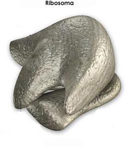

Todas las células de los organismos vivos contienen ribosomas, que son pequeñas estructuras distribuídas por todo el citoplasma y también concentradas en ciertos lugares en particular, como en el retículo endoplasmático rugoso, y dentro de los cloroplastos y las mitocondrias.
En los ribosomas ocurre uno de los pasos más importantes de la fabricación de proteínas al interior de la célula. Por ello se dice frecuentemente que los ribosomas son las fábricas de proteínas de las células.